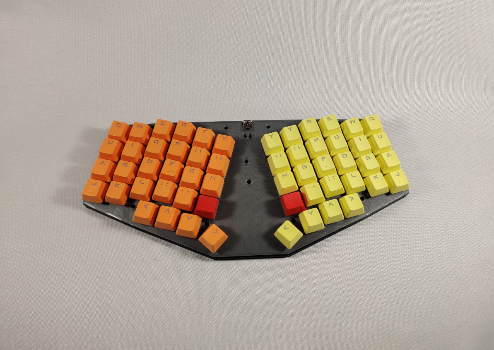

The Elytra

Beginnings
So i wanted to try the keyberonf4 layout linked here. and i thought i had the screws i needed. i didnt. so i decided to use two alpha kits i bought when i didnt know anything about keyboards at least they are finally out of their bags!
also due to suprisingly popular demand i took a stab at a handwiring guide, using this project as the tutorial, so thats where most of this log is: linked here